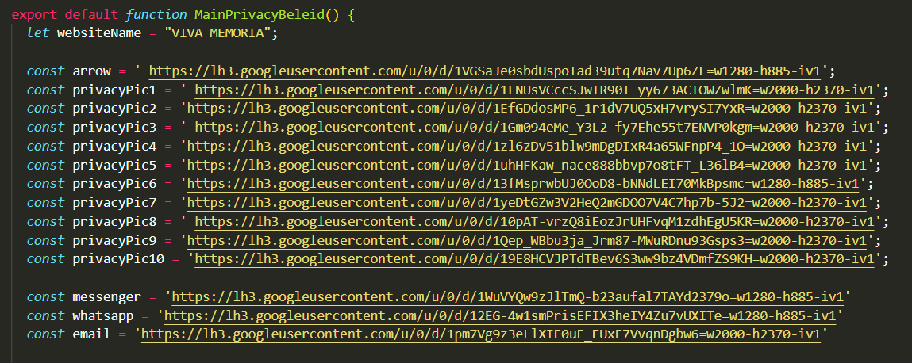
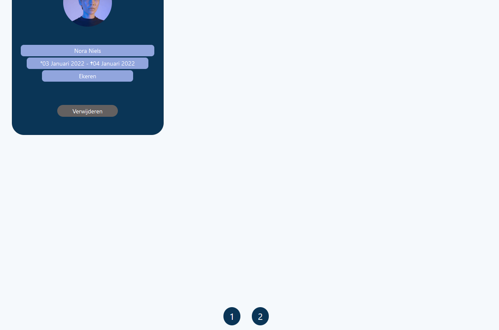

Reflectieverslag, week 15
20/12/2021 - 24/12/2021Deze week ging het vrij goed. Ik was de hele week bezig met implementatie van pagina's. Het was een leerzame week. Ik heb meer betrokken met react en componenten die in verschillende pagina's opnieuw gebruikt kunnen worden. Dus het is niet meer nodig om een funcie in verschillende pagina's opnieuw te schrijven waarvoor een developer veel tijd kan besparen en aan de andere kant de snelheid van de website zou verhogen door het minder herhalen van dezelfde codes.
Alleen responsief maken van pagina's kost even tijd omdat samenwerking van react en dev tools een beetje langzaam is.
Volgende taken heb ik gedaan:
- design voor debug van het verstoppende titels onder sticky navbar op Miro (voor algemene voorwaarden, privacybeleid- en FAQ-pagina's)
- contactgegevens op privacybeleid pagina toegevoegd en geactiveerd
- component van scroll naar boven knop voorgesteld en geimplementeerd
- test van functionaliteit op jira
- implementatie van FAQ-pagina
- het verplaatsen van alle gebruikte foto's naar Google Drive
- scroll naar boven knop aangepast
- mail provider voor Auth0 geactiveerd
- deactivatie van de SMTP server op Plesk
- implementatie van "mijn herdenkingsruimten" pagina
- het aanpassen van 404-pagina design
- mijn herdenkingsruimten pagina responsief gemaakt
- paginatie component gemaakt
- spinner component gemaakt
- implementatie van 404-pagina
Maandag:
-
design voor debug van het verstoppende titels onder sticky navbar (algemene voorwaarden, privacybeleid- en FAQ-pagina's)
3 ideeën op miro gezet dan kunnen mijn mentors gemakkelijker beslissen welk idee zou beter zijn.
-
implementatie van tweede idee
Een van mijn ideeën is één afbeelding toevogen boven elk titel, zo bestaat er voldoende ruimte tussen de titel en sticky navbar. Daarvoor heb ik afbeeldingen gezocht, editeerd obv onze kleur regels en daarna de implementatie van privacybeleid pagina aangepast met afbeeldingen.
-
contactgegevens op privacybeleid pagina toegevoegd en geactiveerd
-
component van scroll naar boven knop voorgesteld en geimplementeerd
Nu kunt de gebruiker met een klik op elk titel naar zijn gerelateerde uitleg gaan. Om gebruikers snell terug naar boven te kunnen gaan -zonder extra manuaal scroll naar boven- heb ik een component voor "terug naar boven-knop" gemaakt en toegevoegd in de pricacybeleid pagina. Deze component kunt hergebruikt worden in gelijke pagina's zoals algemene voorwaarden, veelgestelde vragen enzovoort.

Dinsdag:
-
test van functionaliteit op jira met screenshot en comment
-
implementatie van FAQ-pagina (veelgestelde vragen)
-
alle foto's van van ons project naar Google Drive verplaatst. Ivp. relative path heb ik Google Drive URL gebruikt. bv:
 -
scroll naar boven knop aangepast
Ipv een knop met een text heb ik het met een icon met top-arrow gemaakt. voor de tooltip heb ik bootstrap-react overlay gebruikt.
knop met een tekst 
knop zonder tekst
Woensdag:
-
mail provider voor Auth0 geactiveerd
Om een Nederlandse layout voor alle emails die door Auth0 gaan doorgestuurd worden te hebben moest ik aantal aanpassingen (de SMTP server activeren) in plesk server te maken om onze mail provider op Auth0 te kunnen activeren en gebruiken. Ik heb de aanpassingen gedaan en moest wachten tot het aantwoord van mijn mentor voor een opgestuurde email, pas daarna kon ik verder met testing gaan.
-
beginnen met implementatie van "mijn herdenkingsruimten" pagina
Donderdag:
-
deactivatie van de SMTP server op Plesk
Door het activeren van SMTP Server was de Mail service weggegaan. Momenteel is niet de prioriteit om het te activeren.
-
implementatie van "mijn herdenkingsruimten" pagina voltooid

-
het aanpassen van 404-pagina design
Vrijdag:
-
Mijn herdenkingsruimten-pagina responsief gemaakt
op mobile op tablet op grote scherm -
paginatie component gemaakt
Paginatie aan herdenkingsruimten-pagina toegevoegd maar zal aangepast worden volgens het design.
Op elk pagina zal 6 herdenkingsruimten kaartjes zichtbaar worden.
Eerste pagina Tweede pagina  -
spinner component gemaakt
Spinner zal gezien worden wanneer het loaden van de pagina langzaam zou zijn.
-
implementatie van 404-pagina